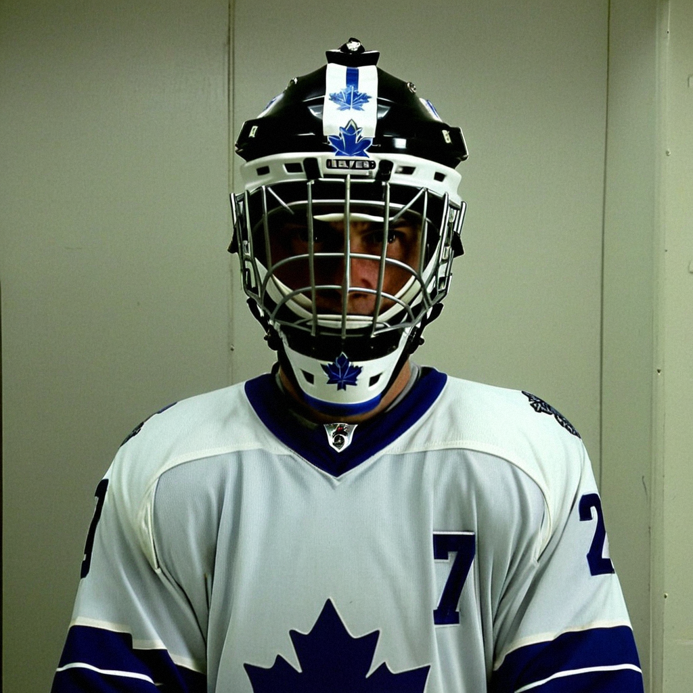

TOR
TORTHE PANIC METER: code Yellow, because the goalie who won me over is on the shelf until Sunday
Aebischer is listed with an unspecified injury, Tellqvist is three below his base, and I have seen this December before.
 Frankie DanforthColumnist · Queen City Telegram
Frankie DanforthColumnist · Queen City Telegram
Code Yellow

Thirteen straight wins and I am moving the Meter to Yellow, and before you write in, let me explain myself, because I know what code Green felt like and I hated that too.
 David Aebischer84 is on the injured list. The league's designation is unspecified, the onset window sits between Dec 8 and Dec 11, and the return date is firm: Dec 12, the day of the Philadelphia game. So this may be nothing. One game, maybe two, out of the lineup.
David Aebischer84 is on the injured list. The league's designation is unspecified, the onset window sits between Dec 8 and Dec 11, and the return date is firm: Dec 12, the day of the Philadelphia game. So this may be nothing. One game, maybe two, out of the lineup.
But I have spent the last month telling anyone who would listen that the $0.50M man at 57.5 minutes a night across 16 appearances had taken the crease  Ed Belfour91 earns $6.50M to guard, and that it was not a fluke. Now he is hurt, and the options are a 39-year-old with 10 starts and a 25-year-old whose Bureau grade has fallen three below his base to 75.
Ed Belfour91 earns $6.50M to guard, and that it was not a fluke. Now he is hurt, and the options are a 39-year-old with 10 starts and a 25-year-old whose Bureau grade has fallen three below his base to 75.
Mikael Tellqvist73 played Friday against Pittsburgh and gave up two. Two is fine. Two is not the problem.
What the man said
Aebischer told The Tunnel's Jan Kowalczyk after the Islander shutout that the quiet nights are the hard ones. "You are more nervous, I think, when the game is quiet. Because you don't know when the one shot comes, and you must be there."
That is a goalie who understands his own job better than most people paid to talk about it. He also said, on the subject of the streak, "You win in December and nobody cares in April if you stop." I have been turning that line over for four days, and I cannot decide if it is wisdom or a warning.
Here is what I know. The Index has Tellqvist down three, which means the Bureau's form measure sees a goalie playing below his base, and his morale is fine at 96, which means nobody in the room is worried about him. Belfour sits at 95 morale with a 93 grade and one year on the deal. The man is a professional. He will be ready if called.
My worry is not the next two games. It is that I finally stopped treating this crease as a problem, and the hockey gods noticed.
The Meter sits at Yellow. Sunday cannot come fast enough.